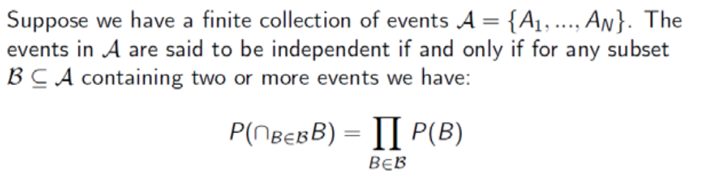

Independence
Probabilistic Independence
두 사건이 독립이라는 말은 한 사건이 발생하든 말든 다른 사건이 발생할 확률은 변하지 않는다는 것이다. 이를 수식으로 옮기면 다음과 같다.
$ P(A\cap{B}) = P(A)P(B) $
이 식은 다음과도 같다.
$ P(A\vert{B}) = P(A) $ and $ P(B\vert{A}) = P(B) $
Some Ground Rules
A와 B가 독립이라면 다음 사건들도 서로 독립이다.
- A and Bc
- Ac and B
- Ac and Bc
Independence of Three Events
둘 뿐만 아니라 셋 이상의 사건이 서로 독립이려면 어떤 조건이 성립해야 할까? 알아보자.
세 사건이 서로 독립이려면 다음 네 가지 조건이 만족해야 한다.
- $ P(A\cap{B}) = P(A)P(B) $
- $ P(A\cap{C}) = P(A)P(C) $
- $ P(B\cap{C}) = P(B)P(C) $
- $ P(A\cap{B}\cap{C}) = P(A)P(B)P(C) $
마지막 조건 없이 위 세 조건만 만족한다면 독립이라고 할 수 없다. 더 많은 수의 사건에 대한 식은 아래에 이미지로 첨부해놓겠다.

간단하게 설명하자면 주어진 사건들의 모든 교집합 조합이 있을 때, 그것들의 확률이 전부 교집합된 사건들의 확률의 곱과 같아야 한다는 것이다.
Conditional Independence
여기서는 조건부 확률 간의 독립에 대해서 다룰 건데, 큰 차이는 없다.
$ P(A\cap{B}\vert{C}) = P(A\vert{C})P(B\vert{C}) $
그냥 독립에서 given C가 붙어있을 뿐 나머지는 동일하다.
$ P(A\vert{B\cap{C}}) = P(A\vert{C}) $
$ P(B\vert{A\cap{C}}) = P(B\vert{C}) $
교집합이 저 위치에 있어서 당황스러울수도 있는데, B(A)와 C가 동시에 일어났을 때와 C만 일어났을 때의 A(B)의 확률이 동일하다는 뜻으로 역시나 C가 일어났다는 상황을 덧붙였을 뿐 기존의 독립과 크게 다르지 않다.